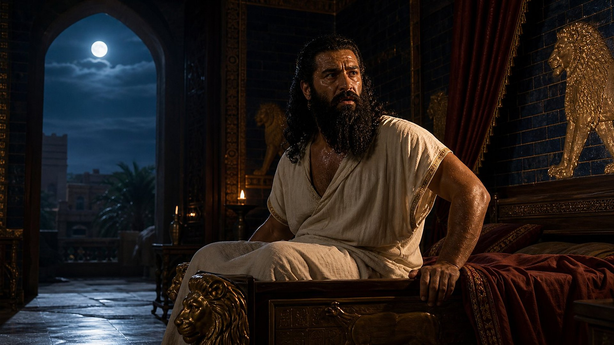

Babylone · vers 606/605 av. n. è. · Statut : EN COURS D’ACCOMPLISSEMENT
Un roi qui ne dort plus
Nabuchodonosor est alors l’homme le plus puissant du monde. Il a écrasé l’Égypte à Karkemish et détruit Jérusalem ; tout le Proche-Orient lui paie tribut. Pourtant, une nuit, un songe le réveille en sursaut et le laisse incapable de se rendormir.
Il convoque ses sages, mais exige l’impossible : qu’on lui dise non seulement ce que signifie le songe, mais aussi ce qu’il a vu. Les devins chaldéens protestent qu’aucun homme sur terre ne peut faire cela. C’est alors qu’un jeune exilé de Juda, Daniel, demande un délai. Il revient en déclarant qu’un Dieu dans les cieux révèle les secrets, et qu’il fait savoir au roi « ce qui arrivera à la fin des jours ».
La suite trace un panorama sans équivalent dans l’Antiquité : la succession des grandes puissances, depuis Babylone jusqu’à un royaume qui ne passera jamais.

Reconstitution numériqueNabuchodonosor, tiré du sommeil par son songe.
Et en la seconde année du règne de Nebucadnetsar, Nebucadnetsar songea des songes, et son esprit fut agité, et son sommeil le quitta.
Daniel 2:1
Darby 1885
Daniel 2:31-35
« Une grande statue »
Reconstitution numériqueDaniel devant Nabuchodonosor : « Il y a un Dieu dans les cieux qui révèle les secrets. »
Daniel décrit d’abord ce que le roi a vu : une statue immense, d’un éclat extraordinaire et terrifiante à regarder. Sa tête est d’or ; sa poitrine et ses bras sont d’argent ; son ventre et ses cuisses sont d’airain ; ses jambes sont de fer, et ses pieds mêlent le fer et l’argile.
Puis une pierre se détache d’une montagne « sans mains », sans intervention humaine. Elle frappe la statue aux pieds, et tout s’effondre : le fer, l’argile, l’airain, l’argent et l’or deviennent comme la balle qu’emporte le vent. La pierre, elle, grandit jusqu’à devenir une montagne qui remplit toute la terre.
Les métaux perdent de leur valeur de la tête aux pieds, mais gagnent en dureté. Leur ordre suit celui des royaumes dans l’histoire.
Toi, ô roi, tu voyais, et voici une grande statue: cette statue était grande, et sa splendeur, extraordinaire ; elle se tint devant toi, et son aspect était terrible. La tête de cette statue était d’or pur ; sa poitrine et ses bras, d’argent ; son ventre et ses cuisses, d’airain ; ses jambes, de fer ; ses pieds, en partie de fer et en partie d’argile. Tu vis, jusqu’à ce qu’une pierre se détacha sans mains ; et elle frappa la statue dans ses pieds de fer et d’argile, et les broya ; alors furent broyés ensemble le fer, l’argile, l’airain, l’argent et l’or, et ils devinrent comme la balle de l’aire d’été ; et le vent les emporta, et il ne se trouva aucun lieu pour eux ; et la pierre qui avait frappé la statue devint une grande montagne qui remplit toute la terre.
Daniel 2:31-35
Darby 1885
Exploration interactive
Les métaux de la statue
Choisissez une partie de la statue pour voir le royaume qu’elle représente, ses dates, et son équivalent dans les visions de Daniel 7 et 8. Sur le modèle en 3D, on peut aussi cliquer directement sur une partie, ou faire glisser pour tourner la statue.
Reconstitution numérique
Modèle 3D · cliquer pour choisir, glisser pour tourner
Babylone
Tête d’or pur
Période
607 → 539 av. n. è.
Daniel 7
Un lion aux ailes d’aigle
Daniel 8
— (Babylone tombe avant l’accomplissement de la vision)
« Toi, tu es cette tête d’or. » Daniel identifie la tête au royaume de Nabuchodonosor, le plus éclatant de la série.
Niveau de preuve : DONNÉE HISTORIQUEDaniel 2:38
Médo-Perse
Poitrine et bras d’argent
Période
539 → 331 av. n. è.
Daniel 7
Un ours dressé sur un côté
Daniel 8
Le bélier aux deux cornes, « les rois de Médie et de Perse »
Deux bras pour deux peuples unis : les Mèdes et les Perses prennent Babylone en 539 sous la conduite de Cyrus.
Niveau de preuve : DONNÉE HISTORIQUEDaniel 2:39
Grèce
Ventre et cuisses d’airain
Période
331 → 30 av. n. è.
Daniel 7
Un léopard à quatre ailes et quatre têtes
Daniel 8
Le bouc à la grande corne, puis quatre cornes
Un royaume « qui dominera sur toute la terre » : Alexandre conquiert l’Empire perse, puis ses généraux se le partagent.
Niveau de preuve : DONNÉE HISTORIQUEDaniel 2:39
Rome
Jambes de fer
Période
À partir de 30 av. n. è.
Daniel 7
Une bête terrible aux dents de fer et aux dix cornes
Daniel 8
—
Un royaume « fort comme le fer », qui broie ses rivaux. Les dix cornes de Daniel 7 figurent l’ensemble des royaumes issus de Rome.
Niveau de preuve : DONNÉE HISTORIQUEDaniel 2:40
La puissance anglo-américaine
Pieds et dix orteils de fer mêlé d’argile
Période
Depuis 1763, jusqu’au temps de la fin
Daniel 7
La petite corne qui abat trois rois
Daniel 8
Le « roi au visage farouche », brisé « sans main »
Lecture prophétique : la dernière puissance de la série, issue de l’ancien monde romain. L’argile figure les gens du peuple qui affaiblissent son autorité ; les dix orteils, l’ensemble des gouvernements de cette époque.
Niveau de preuve : LECTURE PROPHÉTIQUEDaniel 2:43
Le Royaume de Dieu
Une pierre détachée « sans mains »
Période
À venir, sans date
Daniel 7
La royauté donnée à « quelqu’un comme un fils d’homme »
Daniel 8
La petite corne « brisée sans main »
Lecture prophétique : la pierre frappe la statue aux pieds, et tout est broyé. Le Royaume de Dieu remplacera tous les gouvernements humains et « subsistera à toujours ».
Niveau de preuve : LECTURE PROPHÉTIQUEDaniel 2:44
Vérification · Daniel 2
De la tête aux pieds
Cinq éléments du songe confrontés à l’histoire. Les trois premiers relèvent du passé vérifiable ; les deux derniers sont des lectures prophétiques, signalées comme telles.
01Détail 1
La tête d’or : le royaume de Nabuchodonosor.
« … et partout où habitent les fils des hommes, les bêtes des champs et les oiseaux des cieux, il les a mis entre tes mains et t’a fait dominer sur eux tous. Toi, tu es cette tête d’or. »
Ce qui s’est passé
Le texte identifie lui-même la tête : la dynastie babylonienne de Nabuchodonosor, maîtresse du Proche-Orient depuis la destruction de Jérusalem (607 av. n. è.) jusqu’à la prise de Babylone en 539.
Niveau de preuve : DONNÉE HISTORIQUEPreuves : PR-051
02Détail 2
Un royaume d’argent, inférieur, puis un royaume d’airain qui domine toute la terre.
« Et après toi s’élèvera un autre royaume, inférieur à toi ; puis un troisième [et] autre royaume, d’airain, qui dominera sur toute la terre. »
Ce qui s’est passé
En 539, Babylone passe aux Mèdes et aux Perses (Daniel 5:28). En 331, à Gaugamèles, Alexandre de Macédoine abat l’Empire perse : la Grèce domine à son tour, de la Grèce jusqu’à l’Indus.
Niveau de preuve : DONNÉE HISTORIQUEPreuves : PR-051, PR-054
03Détail 3
Un quatrième royaume, fort comme le fer, qui broie tout.
« Et le quatrième royaume sera fort comme le fer. De même que le fer broie et écrase tout, et que le fer brise toutes ces choses, il broiera et brisera. »
Ce qui s’est passé
Rome absorbe un à un les royaumes hellénistiques ; en 30 av. n. è., la conquête de l’Égypte ptolémaïque fait d’elle la puissance dominante. Aucun empire antique n’a écrasé ses adversaires avec une telle force militaire.
Niveau de preuve : DONNÉE HISTORIQUEPreuves : PR-051
04Détail 4
Des pieds de fer mêlé d’argile : un royaume en partie fort, en partie fragile.
« Et selon que tu as vu le fer mêlé avec de l’argile grasse, ils se mêleront à la semence des hommes, mais ils n’adhéreront pas l’un à l’autre, de même que le fer ne se mêle pas avec l’argile. »
Ce que le musée en lit
Lecture prophétique : le fer des jambes se prolonge jusque dans les pieds. Ils représentent la puissance anglo-américaine, issue de l’ancien monde romain, au temps de la fin. L’argile, « la semence des hommes », désigne les gens du peuple et les mouvements populaires qui l’empêchent d’agir avec la fermeté du fer. Les dix orteils évoquent l’ensemble des gouvernements de cette époque.
Niveau de preuve : LECTURE PROPHÉTIQUEPreuves : PR-052, PR-053
05Détail 5
Une pierre détachée sans mains broie toute la statue et remplit la terre.
« Et dans les jours de ces rois, le Dieu des cieux établira un royaume qui ne sera jamais détruit ; et ce royaume ne passera point à un autre peuple ; il broiera et détruira tous ces royaumes, mais lui, il subsistera à toujours. »
Ce que le musée en lit
Lecture prophétique : la pierre est le Royaume de Dieu, qui mettra fin à tous les gouvernements humains et les remplacera pour toujours. Cette étape est encore à venir ; le musée ne lui assigne aucune date.
Niveau de preuve : LECTURE PROPHÉTIQUE
Daniel 7 · vers 553 av. n. è. · Statut : EN COURS D’ACCOMPLISSEMENT
Quatre bêtes montent de la mer
Reconstitution numériqueLe lion aux ailes d’aigle et l’ours : les deux premières bêtes de la vision.
Une cinquantaine d’années après le songe du roi, Daniel reçoit à son tour une vision. Les quatre vents des cieux agitent la grande mer, d’où montent quatre bêtes : un lion aux ailes d’aigle, un ours dressé sur un côté qui tient trois côtes entre ses dents, un léopard à quatre ailes et quatre têtes, puis une quatrième bête « effrayante et terrible » aux grandes dents de fer, qui porte dix cornes.
L’ange donne lui-même la clé : « ces grandes bêtes, qui sont quatre, sont quatre rois ». La vision reprend la séquence de la statue, mais sous un autre angle : là où le roi païen voyait une œuvre de métal éclatante, le prophète voit des bêtes de proie.
Une petite corne surgit ensuite parmi les dix et en abat trois. Enfin, la scène se déplace au ciel : la domination est retirée aux bêtes et donnée, pour toujours, à « quelqu’un comme un fils d’homme ».
Et quatre grandes bêtes montèrent de la mer, différentes l’une de l’autre. La première était comme un lion, et elle avait des ailes d’aigle. Je vis jusqu’à ce que ses ailes furent arrachées, et qu’elle fut soulevée de terre, et mise debout sur ses pieds, comme un homme ; et un cœur d’homme lui fut donné. Et voici une autre, une seconde bête, semblable à un ours, et elle se dressait sur un côté. Et [elle avait] trois côtes dans sa gueule, entre ses dents ; et on lui dit ainsi: Lève-toi, mange beaucoup de chair. Après cela, je vis, et en voici une autre, – comme un léopard ; et elle avait quatre ailes d’oiseau sur son dos ; et la bête avait quatre têtes ; et la domination lui fut donnée.
Daniel 7:3-6
Darby 1885
Après cela je vis dans les visions de la nuit, et voici une quatrième bête, effrayante et terrible et extraordinairement puissante, et elle avait de grandes dents de fer: elle dévorait et écrasait ; et ce qui restait, elle le foulait avec ses pieds. Et elle était différente de toutes les bêtes qui étaient avant elle ; et elle avait dix cornes.
Daniel 7:7
Darby 1885
01Détail 1
Quatre grandes bêtes montent de la mer : quatre rois.
« Ces grandes bêtes, qui sont quatre, sont quatre rois qui surgiront de la terre … »
Ce qui s’est passé
Comme les métaux de la statue : le lion ailé (Babylone), l’ours dressé sur un côté (la Médo-Perse, où la Perse finit par dominer), le léopard à quatre ailes et quatre têtes (la Grèce, rapide, puis partagée en quatre), et une bête terrible aux dents de fer (Rome).
Niveau de preuve : DONNÉE HISTORIQUEPreuves : PR-051, PR-054
02Détail 2
Dix cornes, puis une autre corne qui abat trois rois.
« Et les dix cornes,… ce sont dix rois qui surgiront du royaume. Et un autre surgira après eux ; et il sera différent des premiers ; et il abattra trois rois. »
Ce que le musée en lit
Lecture prophétique : les dix cornes représentent l’ensemble des royaumes issus de l’Empire romain. La petite corne est la Grande-Bretagne, qui l’emporte successivement sur l’Espagne, les Provinces-Unies et la France, puis forme avec les États-Unis la puissance anglo-américaine.
Niveau de preuve : LECTURE PROPHÉTIQUEPreuves : PR-052
03Détail 3
La domination est donnée à « quelqu’un comme un fils d’homme ».
« Je voyais dans les visions de la nuit, et voici, [quelqu’un] comme un fils d’homme vint avec les nuées des cieux, et il avança jusqu’à l’Ancien des jours, et on le fit approcher de lui. Et on lui donna la domination, et l’honneur, et la royauté, pour que tous les peuples, les peuplades et les langues, le servent. Sa domination est une domination éternelle, qui ne passera pas, et son royaume, [un royaume] qui ne sera pas détruit. »
Ce que le musée en lit
Lecture prophétique : ce personnage est Jésus, qui s’est lui-même appelé « le Fils de l’homme ». Il reçoit de Dieu un royaume qui ne sera jamais détruit ; le musée suit la lecture selon laquelle il a commencé à régner au ciel en 1914 (salle 10).
Niveau de preuve : LECTURE PROPHÉTIQUE
Daniel 8 · vers 551 av. n. è. · Statut : EN COURS D’ACCOMPLISSEMENT
Le bélier et le bouc
Reconstitution numériqueLe bouc « qui ne touchait pas la terre » fond sur le bélier, devant le fleuve.
Deux ans plus tard, au palais de Suse, près du fleuve Oulaï, Daniel voit un bélier à deux cornes inégales ; la plus haute a poussé en dernier. Rien ne lui résiste à l’ouest, au nord et au sud. Puis un bouc arrive de l’ouest à une telle vitesse qu’il ne touche pas le sol. Il porte une grande corne entre les yeux, brise les deux cornes du bélier et le piétine.
Cette fois, l’ange ne laisse aucun doute : le bélier représente « les rois de Médie et de Perse », le bouc « le roi de Javan », c’est-à-dire la Grèce. Babylone domine encore le monde, et pourtant les deux empires suivants sont déjà nommés.
Le bélier que tu as vu, qui avait deux cornes, ce sont les rois de Médie et de Perse. Et le bouc velu, c’est le roi de Javan ; et la grande corne qui était entre ses yeux, c’est le premier roi ; et qu’elle ait été brisée et que quatre [autres cornes] se soient élevées à sa place, c’est que quatre royaumes s’élèveront de la nation, mais non avec sa puissance.
Daniel 8:20-22
Darby 1885
En 334 avant notre ère, Alexandre de Macédoine franchit l’Hellespont avec une petite armée. En trois batailles, le Granique, Issos et Gaugamèles (331), il abat l’Empire perse ; il atteint l’Indus en quelques années.
Au sommet de sa puissance, la « grande corne » se brise : Alexandre meurt à Babylone en 323, à 32 ans. Son empire ne passe pas à sa descendance. Après des années de guerres, la bataille d’Ipsos (301) le laisse partagé entre quatre généraux : Cassandre, Lysimaque, Séleucos et Ptolémée. Ce sont les quatre cornes « vers les quatre vents des cieux », « mais non avec sa puissance ».
Reconstitution numériqueBabylone, juin 323 av. n. è. : Alexandre meurt, entouré de ses généraux.
01Détail 1
Un bélier à deux cornes, la plus haute poussant en dernier : les rois de Médie et de Perse.
« Le bélier que tu as vu, qui avait deux cornes, ce sont les rois de Médie et de Perse. Et le bouc velu, c’est le roi de Javan ; et la grande corne qui était entre ses yeux, c’est le premier roi ; et qu’elle ait été brisée et que quatre [autres cornes] se soient élevées à sa place, c’est que quatre royaumes s’élèveront de la nation, mais non avec sa puissance. »
Ce qui s’est passé
L’ange nomme lui-même la Médie et la Perse. La seconde corne, plus haute, évoque la Perse de Cyrus, qui prend le dessus sur la Médie avant de conquérir l’ouest, le nord et le sud.
Niveau de preuve : DONNÉE HISTORIQUEPreuves : PR-051
02Détail 2
Un bouc venu de l’ouest, si rapide qu’il ne touche pas terre, brise le bélier.
« Et je considérais, et voici, un bouc venant du couchant sur la face de toute la terre, et qui ne touchait pas la terre ; et le bouc avait une corne de grande apparence entre ses yeux. Et il vint jusqu’au bélier qui avait les deux cornes, que j’avais vu se tenir devant le fleuve, et courut sur lui dans la fureur de sa force. Et je le vis arriver tout près du bélier, et il s’exaspéra contre lui et frappa le bélier, et brisa ses deux cornes, et le bélier fut sans force pour tenir devant lui: il le jeta par terre et le foula aux pieds, et il n’y eut personne qui puisse délivrer le bélier de sa main. Et le bouc devint très grand ; et lorsqu’il fut devenu fort, la grande corne fut brisée, et quatre cornes de grande apparence s’élevèrent à sa place, vers les quatre vents des cieux. »
Ce qui s’est passé
Parti de Macédoine en 334 av. n. è., Alexandre bat les Perses au Granique, à Issos puis à Gaugamèles (331) ; en une dizaine d’années, son armée atteint l’Indus.
Niveau de preuve : DONNÉE HISTORIQUEPreuves : PR-054
03Détail 3
La grande corne se brise au sommet de sa force ; quatre cornes la remplacent.
« Et le bouc devint très grand ; et lorsqu’il fut devenu fort, la grande corne fut brisée, et quatre cornes de grande apparence s’élevèrent à sa place, vers les quatre vents des cieux. »
Ce qui s’est passé
Alexandre meurt à Babylone en 323, à 32 ans, sans héritier capable de régner. Après la bataille d’Ipsos (301), son empire est partagé entre quatre de ses généraux : Cassandre, Lysimaque, Séleucos et Ptolémée.
Niveau de preuve : DONNÉE HISTORIQUEPreuves : PR-054
04Détail 4
Un roi au visage farouche, au temps de la fin, brisé « sans main ».
« … et, par son intelligence, il fera prospérer la fraude dans sa main ; et il s’élèvera dans son cœur ; et, par la prospérité il corrompra beaucoup de gens ; et il se lèvera contre le prince des princes, mais il sera brisé sans main. »
Ce que le musée en lit
Lecture prophétique : d’une des quatre cornes sort une petite corne qui grandit jusqu’au « temps de la fin » (Daniel 8:17). Le musée suit la lecture qui y voit la puissance anglo-américaine, issue de l’ancien monde gréco-romain. Elle sera brisée non par des mains humaines, mais par Dieu ; cette étape est encore à venir.
Niveau de preuve : LECTURE PROPHÉTIQUE
Trois visions, une même histoire
Tableau des correspondances
Les visions de Daniel 2, 7 et 8 se recoupent et s’éclairent mutuellement. Les deux dernières lignes relèvent de la lecture prophétique.
Correspondances entre la statue de Daniel 2, les bêtes de Daniel 7 et les animaux de Daniel 8
Puissance
Dates
Statue (Daniel 2)
Bêtes (Daniel 7)
Vision de Daniel 8
Babylone
607-539
Tête d’or
Lion aux ailes d’aigle
—
Médo-Perse
539-331
Poitrine et bras d’argent
Ours dressé sur un côté
Bélier à deux cornesDaniel 8:20
Grèce
331-30
Ventre et cuisses d’airain
Léopard à quatre ailes et quatre têtes
Bouc à la grande corne, puis quatre cornesDaniel 8:21-22
Rome
dès 30 av. n. è.
Jambes de fer
Bête terrible aux dents de fer, dix cornes
—
Puissance anglo-américaine
depuis 1763
Pieds de fer et d’argile
Petite corne qui abat trois rois
Petite corne, « roi au visage farouche »Daniel 8:23-25
Royaume de Dieu
à venir
Pierre détachée sans mains
Royauté donnée au « fils d’homme »
La petite corne « brisée sans main »
Niveau de preuve : DONNÉE HISTORIQUEDates des puissances antiques : PR-051, PR-054. Dates avant notre ère sauf mention contraire.
Niveau de preuve : LECTURE PROPHÉTIQUE Le temps de la fin
Les pieds de la statue
Les trois visions ne s’arrêtent pas à l’Antiquité : la statue est frappée aux pieds, la quatrième bête porte une corne qui grandit après les autres, et l’ange précise que la vision du bélier et du bouc « est pour le temps de la fin ». La lecture suivie par le musée situe donc le dernier maillon de la chaîne à notre époque.
Aux yeux de cette lecture, la petite corne de Daniel 7 est la Grande-Bretagne. Après avoir pris le dessus sur l’Espagne, les Provinces-Unies et la France, elle sort de la guerre de Sept Ans (1763) comme la première puissance maritime du monde. Depuis la Première Guerre mondiale, elle forme avec les États-Unis un partenariat étroit, une puissance « double » qui domine la scène mondiale. Le fer y reste présent, mais mêlé à l’argile : « la semence des hommes », c’est-à-dire les gens du peuple et les mouvements populaires, qui limitent la fermeté de cette puissance. Les dix orteils évoquent l’ensemble des gouvernements de la fin.
Ce qui vient ensuite est encore à venir, et le musée ne lui assigne aucune date. La pierre, le Royaume de Dieu confié au « fils d’homme », mettra fin à tous les gouvernements humains, sans intervention humaine : « sans mains ».
Cette lecture prophétique ne porte aucun jugement sur les peuples britannique ou américain, ni sur aucune nation ; le musée ne prend parti dans aucune question politique.
Et dans les jours de ces rois, le Dieu des cieux établira un royaume qui ne sera jamais détruit ; et ce royaume ne passera point à un autre peuple ; il broiera et détruira tous ces royaumes, mais lui, il subsistera à toujours.
Daniel 2:44
Darby 1885
Je voyais dans les visions de la nuit, et voici, [quelqu’un] comme un fils d’homme vint avec les nuées des cieux, et il avança jusqu’à l’Ancien des jours, et on le fit approcher de lui. Et on lui donna la domination, et l’honneur, et la royauté, pour que tous les peuples, les peuplades et les langues, le servent. Sa domination est une domination éternelle, qui ne passera pas, et son royaume, [un royaume] qui ne sera pas détruit.
Daniel 7:13-14
Darby 1885
Et il vint près du lieu où j’étais, et quand il vint, je fus effrayé et je tombai sur ma face ; et il me dit: Comprends, fils d’homme, car la vision est pour le temps de la fin.
Daniel 8:17
Darby 1885
Quand le livre a-t-il été écrit ?
VIe ou IIe siècle ?
Pérès: Ton royaume est divisé, et donné aux Mèdes et aux Perses.
Daniel 5:28
Darby 1885
Dossier
Pièces à conviction
Un manuscrit de Qumrân daté par le carbone 14, un cylindre babylonien et des repères historiques établis par les ouvrages de référence.
Niveau de preuve : DÉBATTUPR-050
Manuscrits de Daniel 4Q112-4Q116 ; datation de 4Q114
Nature
Manuscrits bibliques (Qumrân, grotte 4)
Date
230-160 av. n. è. (carbone 14 + IA, 2025)
Conservation
Autorité des antiquités d’Israël (bibliothèque numérique Leon Levy)
Inventaire
4Q114 (4QDan c)
Popović et al., PLOS One, 2025 : le fragment 4Q114 (Daniel 8-11) est daté par le carbone 14 de 230-160 av. n. è. Les auteurs notent que cette plage recoupe les années 160, où la majorité des chercheurs place la rédaction finale du livre. Le livre circulait donc au plus tard vers 160. Le musée suit la datation que le livre donne de lui-même (vie s.) en signalant le débat.
Succession des empires : Babylone (chute en 539), Médo-Perse (chute en 331, Gaugamèles), Grèce (royaumes hellénistiques absorbés par Rome, dernier en 30 av. n. è.), Rome
Nature
Repères historiques
Date
539 av. n. è. – ve s. de n. è.
Dates de manuel. Daniel 8:20, 21 nomme lui-même la Médie-Perse et la Grèce (Javan).
Alliance anglo-américaine née pendant la Première Guerre mondiale (entrée en guerre des États-Unis, 6 avril 1917)
Nature
Repères historiques
Date
1917
Les États-Unis entrent en guerre aux côtés du Royaume-Uni le 6 avril 1917 : début d’une coopération étroite. Lecture des « pieds » de Daniel 2 et du roi du Sud.
Le livre de Daniel aurait été écrit vers 165 av. n. è., après les événements.
C’est la position de la majorité des chercheurs, et le musée la mentionne. Le livre se présente comme l’œuvre de Daniel au vie siècle, et le musée suit cette datation. Le fragment 4Q114, daté par le carbone 14 entre 230 et 160, montre en tout cas que le livre circulait déjà au plus tard vers 160. Même avec une rédaction tardive, la domination de Rome, effective seulement en 30 av. n. è., et tout ce qui suit restaient à venir.
Le quatrième royaume serait la Grèce : Babylone, la Médie, la Perse, puis la Grèce.
Le livre de Daniel réunit lui-même la Médie et la Perse en un seul royaume : Babylone est « donnée aux Mèdes et aux Perses » (Daniel 5:28), et le bélier de Daniel 8 porte deux cornes, « les rois de Médie et de Perse ». La Grèce, nommée juste après (Daniel 8:21), est donc le troisième royaume ; le quatrième, le fer, vient ensuite.
Une statue antique ne peut pas annoncer une puissance moderne.
Le texte ne s’arrête pas à l’Antiquité : les royaumes se succèdent jusqu’aux jours où Dieu établira un royaume éternel (Daniel 2:44), et la pierre frappe la statue aux pieds, c’est-à-dire à la dernière époque. C’est une lecture prophétique, que le musée signale comme telle.
Ces bêtes sont des symboles assez vagues pour s’appliquer à n’importe quel empire.
Les visions de Daniel s’éclairent l’une l’autre : Daniel 8 nomme la Médie-Perse et la Grèce (Javan), et les traits des bêtes correspondent à leur histoire. L’ours dressé sur un côté évoque la domination finale de la Perse sur la Médie ; le léopard à quatre têtes, les quatre royaumes issus de l’empire d’Alexandre.
Beaucoup de spécialistes voient dans la petite corne le roi séleucide Antiochos IV.
C’est une lecture répandue, présentée ici comme telle. Mais Antiochos IV régnait sur l’un des royaumes grecs, la troisième bête, alors que la petite corne sort de la quatrième. De plus, la vision la fait durer jusqu’au moment où le royaume est donné au « fils d’homme » (Daniel 7:13-14, 26-27).
Une prophétie aussi précise sur Alexandre a forcément été écrite après coup.
C’est l’argument central de la datation tardive (voir la statue). Le musée signale le débat. Il note aussi que la vision ne s’arrête pas à Alexandre : elle se prolonge « pour le temps de la fin » (Daniel 8:17).
La petite corne de Daniel 8 serait Antiochos IV, qui profana le temple de Jérusalem en 167.
De nombreux commentateurs le pensent, et le musée le signale. Mais l’ange insiste : la vision concerne « le temps de la fin » (Daniel 8:17, 19), et la petite corne doit être brisée « sans main ». Antiochos IV est mort en 164 av. n. è., plus de deux mille ans avant ce temps de la fin.